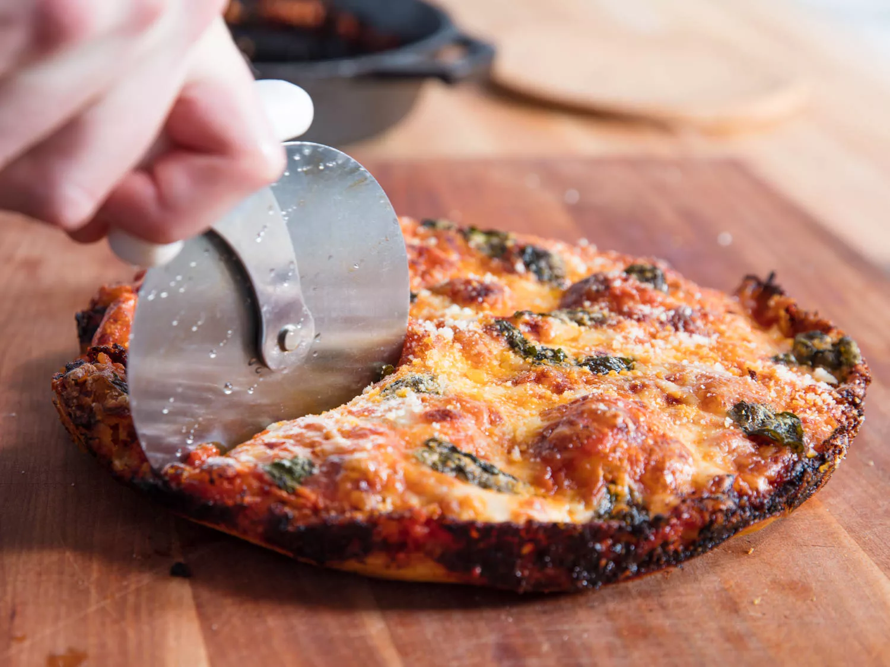

Foolproof Pan Pizza

Description
This pizza uses a no-kneed dough and can be made with a 10 inch cast iron skillet
Ingredients
- 400g bread flour
- 10g kosher salt
- 4g instant yeast
- 275g water
- 8g extra-virgin olive oil
- 1.5 cups of pizza sauce
- 12 ounces grated full-fat, low-moisture mozzarella cheese
- Toppings as desired
- Small handful of fresh basil(optional)
- 2 ounces of grated Parmesan or Pecorino Romano Cheese(optional)
Steps
- Combine flour, salt, yeast, water, and oil in a large boal and mix until no dry flour remains
- Cover bowl tightly with plastic wrap, let rest at room temperature for at least 8 hours
- Sprinkle top of dough with flour, then transfer to a floured surface. Divide dough into 2 pieces and form 2 balls
- Pour 1-2 tablespoons of oil in the bottom of two 10-inch cast iron skillets. Place a ball of dough in each pan and flatten them
- Cover sillets tightly with plastic wrap and sit for at least 2 hours. Preheat oven to 550F
- After 2 hours, gently spread the dough so it reaches near or next to the edge of the skillet. Ensure no air bubbles are present
- Cover dough with 3/4 cups of pizza sauce. Sprinkle cheese and cover with desired toppings
- Transfer skillet to over, bake for 12-15 minutes. Immediately sprinkle with cheese. Transfer to cutting board and serve